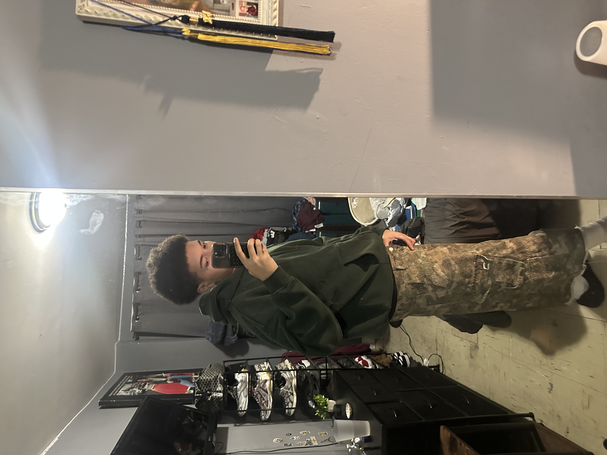

About Me
I am Dominican, born and raised in the Bronx, and a first-generation college student. My background has shaped my discipline, perspective, and commitment to pursuing higher education and creative entrepreneurship.
Me

Who I Am
I’m quiet around people I don’t know, but more outgoing with friends. I’m observant, calm, and naturally creative, and I like taking time to think and understand things deeply. I’m still figuring out my path and learning from each experience as I grow.
What I Love
I’m passionate about fashion, design, drawing, and working with technology. I enjoy creating work that expresses ideas and meaning, not just visuals. I also value helping others and using creativity as a way to communicate and connect.
Where I'm Going
I aim to start my own business and design a brand that people genuinely enjoy and connect with, especially in streetwear. While I’m still exploring different directions, I know I want my future to combine creativity, design, and independence. My focus is on building skills and turning ideas into something impactful.